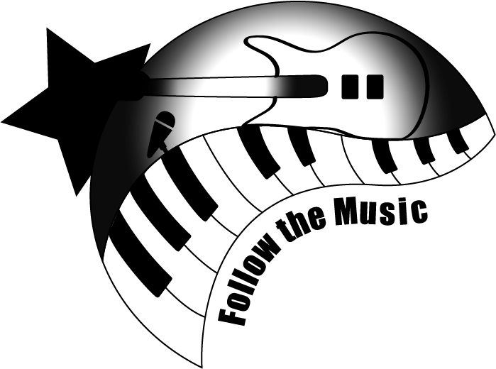

About Us
Follow the Music is a mobile app with a mission to help you find live music happening near you. Customize your profile with your favorite music genres and venue vibes. Follow the Music will give you a customized list of live music playing in your area. Our app works to promote upcoming bands and small businesses in San Luis Obispo, California. All done while bringing people together through the power of music!
Step 1: Download our mobil app
Step 2: Customize your profile
Step 3: Follow the music and rock on!
Purchase tickets on Ticketmaster.com today!